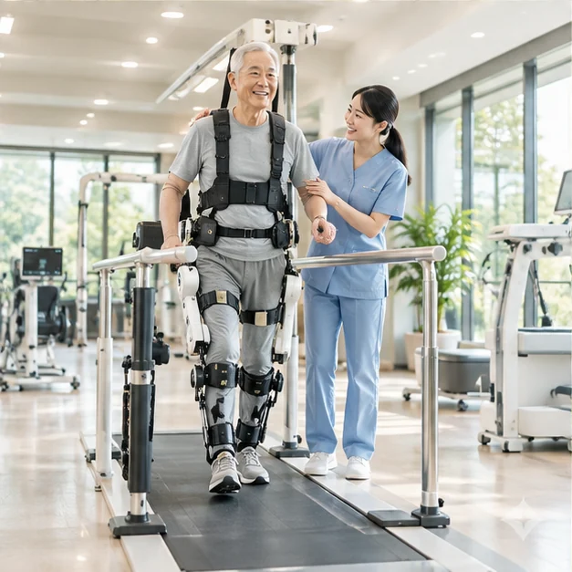

회복에 집중하는 하루, 가족이 안심하는 내일. 숲의 편안함과 사람 중심의 전문 케어가 만나는 더포레의 새로운 돌봄을 소개합니다.
같은 질환이라도 회복의 속도는 다르기에, 치료부터 생활까지 개인에게 맞는 케어의 가능성을 설계합니다.

재활은 단순한 훈련이 아니라 익숙했던 일상을 다시 만나기 위한 과정입니다. 전담 치료사와 다양한 훈련 환경을 결합한 신경계 재활 센터 모델을 구상했습니다.
따뜻한 나무결과 부드러운 채광, 휠체어 이동 동선을 고려한 침실, 공기처럼 자연스러운 프라이버시. 하루의 편안함을 세심하게 계획합니다.
시설과 병실 둘러보기 ↗
예상 비용을 확인하고, 필요한 서류를 살펴보고, 상담 준비까지. 복잡한 과정을 투명한 단계로 안내합니다.
더포레는 회복과 배려의 방식을 다시 디자인합니다.